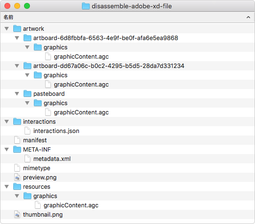

大都会要素が0.2%（文字数換算）ぐらいの大都会岡山Advent Calendar 15日目です。前日は@arisonjpさんの『ギガフロート玉野「ああ、すばらしき深山公園」』でした。し…しんざんこう…えん？（みやまこうえんです）
明日はPixelaを開発され、Mashup Awards 2018で「プロが選ぶ APIヒーロー賞」を受賞された@a_knowさんです！
XDファイルの正体とは？
早速ですが、XDファイルをZIPとして展開できるのはご存知でしょうか？ 拡張子をZIPに変更してダブルクリックするか、ターミナルなどを使ってunzipすれば簡単に展開できます。
中身はオブジェクトの情報が保存されている「.agcファイル」やプレビュー用の画像などが収められています。

見慣れない拡張子の.agcファイルですが、実態はJSONですので、お使いのエディタやjqなどのツールを使って一括で整形・プロパティのソートしてみましょう。
macOSでjqを使う場合、次のコマンドで.agcとmanifestをまとめて整形・ソートできます。
$ find "フォルダのパス" \( -name "manifest" -o -name "*.agc" \) -exec sh -c 'cat {} | /usr/local/bin/jq -rS . > {}.1 && mv {}.1 {}' \;JSONならGitで差分が取れる
GitではXDファイルそのものの差分は取れませんが、JSONであれば差分が取れます。XDファイルへオブジェクトを1つ追加してはコミットしたリポジトリを用意してみました。
例えば「Artboard2」を追加したときのコミットでは、
artworkフォルダ内にアートボード関連の情報を格納するgraphicContent.agcを作成manifestへアートボードの基本的な情報を追記resources/graphics/graphicContent.agcにもアートボードの情報を追記
といった変更が加えられていることがわかります。
他にもテキストを「大都会岡山Advent Calendar」へ変更したときのコミットでは、アートボード関連の情報を格納するファイルで、
- テキストが格納されている
graphicContent.agcのプロパティname（レイヤー名）の変更 - 同じく
rawText（テキストそのものの内容）の変更
などが行われていることがわかりますね。
元々は「XDファイルの仕様ってどうなってるんだろ」と調べていたら、「Publish .xd file format spec」に出会って、実態がZIPファイルということを知りました。
オープンなデータフォーマットの世界
唐突な話になりますが、アプリの開発が終了してしまった場合、そのアプリでつくられたファイルはどうなるでしょうか？
例えばFirewowks。
フォーマット自体はPNGのため、ファイルそのものを開くことはできます。しかし、ページの設定から配置しているオブジェクトなど、Fireworks独自の要素はPNGのチャンクと呼ばれる領域に書き込まれているため、それを読み出すことは困難です。
つまりアプリが終わると、そのデータは徐々に寿命を迎え、やがて価値が失われてしまいます。アプリが使えなくなるまでにファイルを変換することもできますが、これまでに蓄積してきたすべての資産を変換するのは現実的ではないでしょう。
SketchやXDでは簡単にファイルを展開でき、かつ汎用的なデータフォーマット（JSON）が使われています。そのデータを他のアプリで利用する場合、「加工」自体は必要ですが、例えばSketchでプラグインを開発すれば、XDファイルの内容を可能な限りで再現することだってできます。
Sketchがたくさんのサードパーティサービスと連携できているのは、この「オープンなデータフォーマット」のおかげといっても過言ではないでしょう。そしてXDが同じように「オープンなデータフォーマット」を採用してくれたことで、クリエイティブツール界隈がよりいっそう開かれたと思っています。
「オープンなデータフォーマット」によって、ファイルの寿命が長くなることはもちろんのこと、他のアプリへの乗り換えもしやすくなります。先のようにGitでバージョン管理をしたり、独自のアプリをつくってファイルを解析してみたりと、他の用途で使いやすくなるのでいろんな可能性が広がると思いませんか？
今までにもこうしたファイル形式の採用がなかったわけではありません（例えば.docxや.xlsxとか）。これから大きなシェアを獲得していくであろうクリエイティブツールで採用された点が、とても有意義だと思うわけです。
ホント、いい時代になりましたね。
ちなみに、独自フォーマットを否定するわけではありませんので、そこはよしなに。
最後に残念ポイントをひとつ。展開したXDファイル群は再度ZIPとして圧縮して（拡張子を.xdに変更して）も、XDで開くことができません。バイナリエディタとかで見てみましたが、「ちょっと調べるてみるか」のレベルでは原因を特定できず……。ですので、中身をGitでバージョン管理してるからといって、XDファイルを削除してしまうと大変なことになりますので、ご注意を。（あと、元に戻せないので、競合したときが大変そう…）